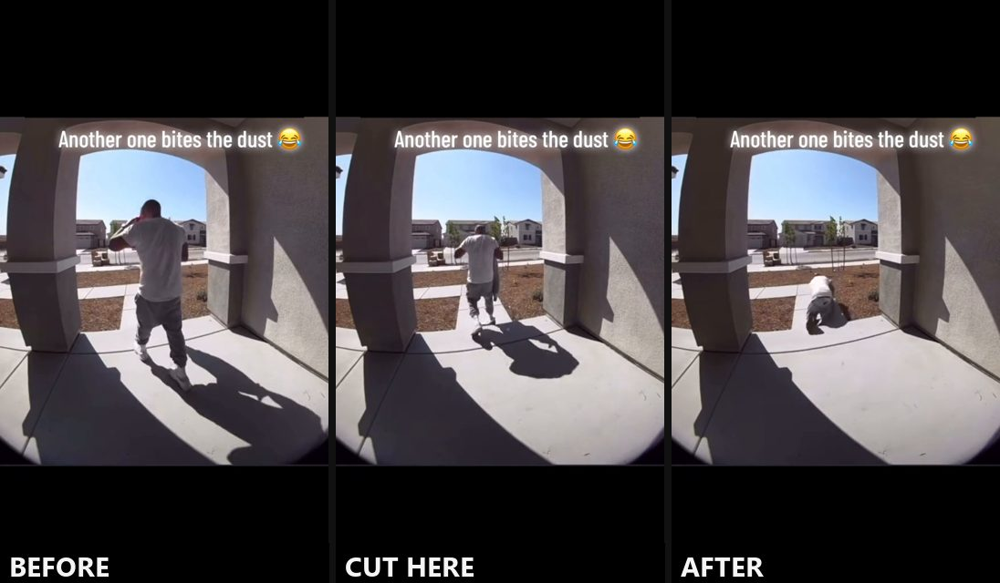
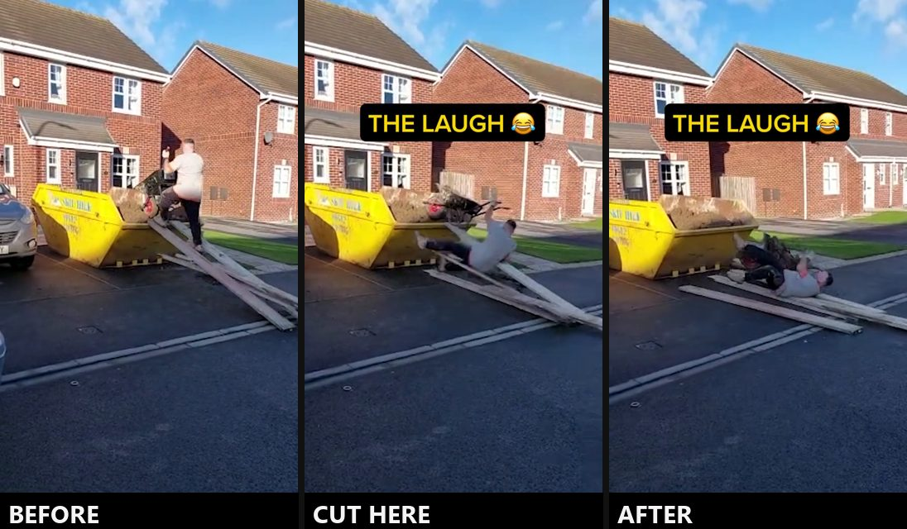
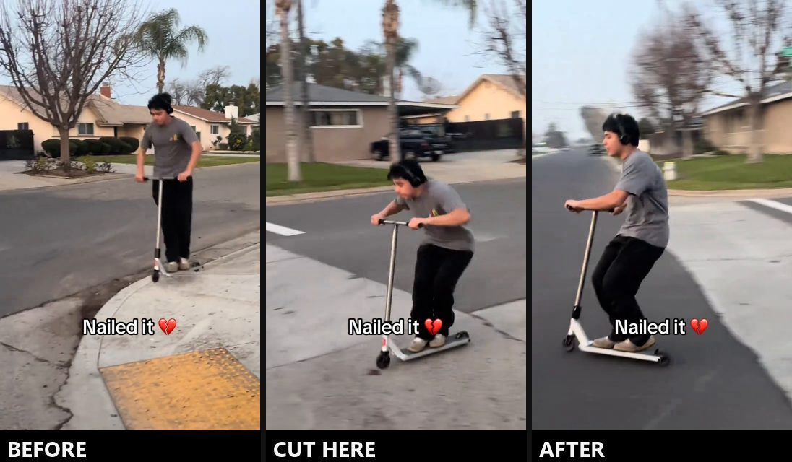

Mon 19 to Fri 23 Oct. Lionel runs it. Three new things to film and test, all step by step below. Five minutes to read.
| Mon 19 | Bad Advice Lionel Already claimed. |
| Tue 20 | Two switch videos, both posted as Trial Reels whoever films them |
| Wed 21 | Share the winner with everyone Lionel |
| Thu 22 | Knock-Off Test, or a carousel Lionel Con |
| Fri 23 | How I feel when anyone Five minutes to film. |
A stranger's viral clip. At the exact moment it goes wrong, it cuts to one of us doing the same thing. About 10 seconds, no talking.
Why three at once: a clothing brand did this and got 14 million views. They made a second one with a different clip and got 9 million. Same recipe, only the clip changes. Our own refilm of That One Bloke was expected to do 15,000 and is on 424,000. When something works, we make more of it.
▶ Watch the brand that did 14M, then 9MSame line on screen at the end of all three:
Caption for all three:
Rules for all three

Their clip. Cut at the stumble, about 2 seconds in.
▶ Watch their clipOurs: phone up high in the corner of a front porch on the 0.5x lens, looking out the door like a doorbell cam. Walk out with a coffee, in thongs, away from the camera. Catch your foot on a pile of old boots on the step and go down onto the lawn.

Their clip. Cut when the planks go, about 4 seconds in.
▶ Watch their clipOurs: a barrow full of old work boots and one plank up to a trailer or a low ute tray, no higher than your knee. Phone side-on, 3 to 4 metres back, barrow going left to right like theirs. Push up, the plank kicks out, and you and the boots go sideways onto the grass.

Their clip: a kid nails a kerb drop. Cut on the drop, about 4.5 seconds in.
▶ Watch their clipOurs: the same drop in old boots, off a driveway lip or a low backyard step, and you stack it onto the grass. Phone at hip height, front-on. Borrow a kick scooter.
Held for the week after unless one of the Tuesday pair flops. Their clip shows a kid and comes from a big US account, the one most likely to get claimed. Fil's call to use it. If Instagram mutes or pulls it, we swap the opening clip.
Instagram's own test. A Trial Reel goes to people who don't follow us first, and our followers don't see it until we share it. We post the doorbell and the wheelbarrow as trials, see which one strangers like more, and share only the winner.
Why not test on TikTok first: nothing shows a TikTok winner is an Instagram winner, and we've only got 910 TikTok followers. Every reel still goes on TikTok too, just not as the test.
Two or three seconds of you in a real moment with one line on screen, then a hard cut to a famous reaction clip that finishes the joke. A salon owner with under 5,000 followers did exactly this and got 903,000 views.
▶ Watch the salon onePick a line (all passed our checks):
The long version lives in FAR's content notes. This link is unlisted, but anyone holding it can open it.